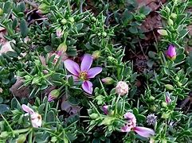

Basonym of Drug
Duralabha
Main Synonym
- Dhanvayasa
- Duhsparsha
- Yasa
- Ananta
- Yavasa
Regional Name
- Bengali: Duralabha
- Gujarati: Dhamaso
- Hindi: Dhamasa, Yavasa
- Tamil: Tulaganeri
- Telugu: Gilaregati
- English: Khorasan Thorn, Virgin's Mantle
Botanical Name
Fagonia cratica
Family
Zygophyllaceae
Classification (Gana)
- Charak Samhita: Kasahara, Hikkanigrahana
- Bhavprakash Nighantu: Guduchyadi Varga
External Morphology
40-60 cm high herb
Useful Parts
Important Phytoconstituent
Galacto Catechine, Catechine, Beta-Phenethylamine
Rasa Panchak
- Rasa: Madhura, Tikta, Kashaya
- Guna: Laghu
- Virya: Shita
- Vipaka: Katu
Action
Vatapittashamak
Therapeutic Indication
- Jwarahara (Anti-Pyretic)
- Kasahara (Anti-Cough)
- Balya (Strengthening)
- Medorogahara (Anti-Obesity)
Therapeutic Uses
- Arsha - Decoction of Yastimadhu, Duralabha, Badar, and Patola is useful as a bath for piles.
- Raktapitta - The root of Duralabha and Bhringaraja with rice gruel is beneficial in bleeding disorders.
- Daha - Paste of Duralabha, Chandana, and Nimba is beneficial in burning sensations.
Dose
- Juice - 10-20 ml
- Decoction - 40-80 ml
Formulations
- Agatsyavaleha
- Khadiradi Gutika
- Vasaghrita
Adverse Effect
Not Known